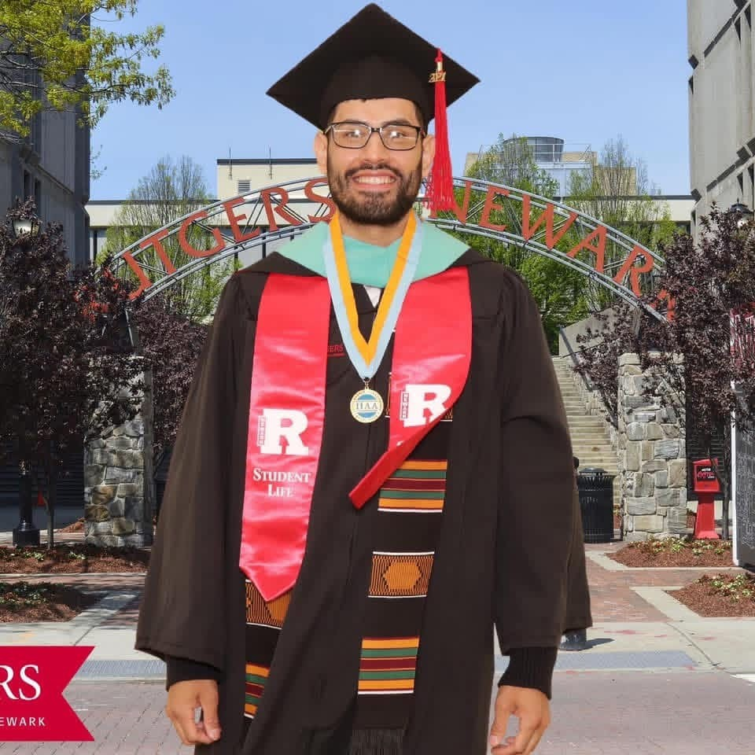
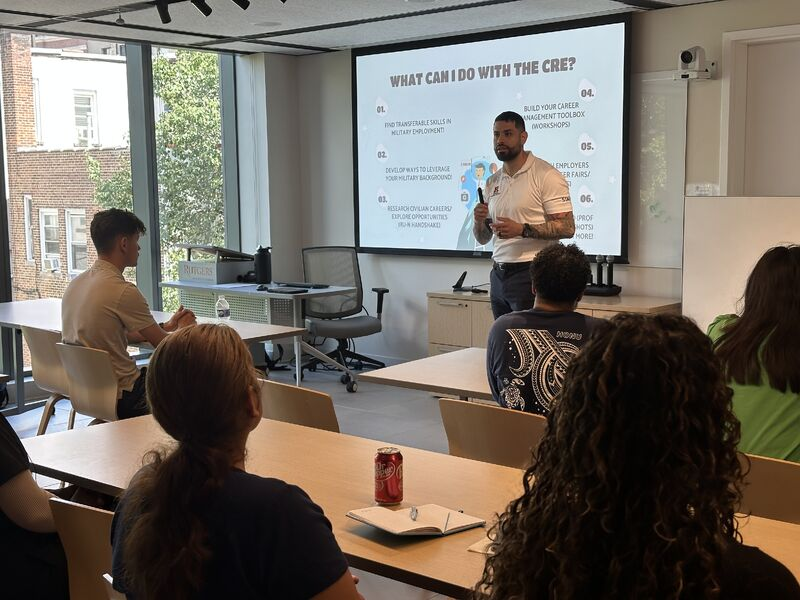

01 / About me
A background across
art, service & technology.
I’m Louis Valderrama, a student at NJIT majoring in Software and Data Engineering.
Follow my path ↓01 / My background
Learning across disciplines.
Art, service, and technology are the threads of my background.
My education brings together fine arts, animation and illustration, computer science, and public administration. Today, I’m studying Software and Data Engineering at NJIT.
Explore the education behind it ↓02 / Education
The education behind the perspective.
I hold two associate degrees, two bachelor’s degrees, and a master’s degree. Each discipline is part of the background I bring to my current studies.
- Current studies
- Software and Data Engineering NJIT
- Master’s degree
- Public AdministrationRutgers
- Bachelor’s degrees
- Animation & IllustrationMontclairPublic AdministrationKean University
- Associate degrees
- Fine ArtsHCCCComputer ScienceHCCC

03 / Public service
Working with people.
I currently work at Rutgers–Newark University as the Program Coordinator for the Office of Veteran Affairs.
Alongside my creative and technical education, public administration and my work at Rutgers are the service side of my story.
Outside of work & school ↓
04 / Outside of work & school
What keeps me moving.
There’s more to my story than work and degrees. Outside of both, these are my interests.
Next / My toolkit